Dynatrace assist developers on creating better software faster. This series is crafted for developers and performance engineers on helping them get the feedback they need and analyze the impact of every code change on every release. We will also learn how automated and intelligent QualityGates and Performance as a Self-Service stop bad releases going into production automatically.
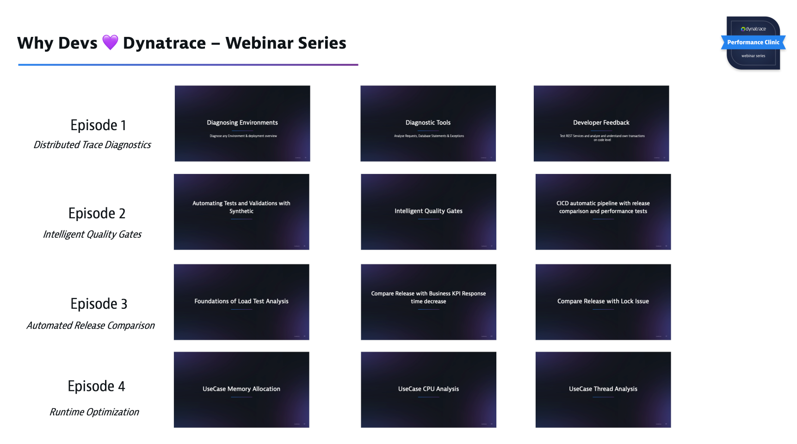
Some of the topics you will learn:
- Help you become more comfortable using Dynatrace to diagnose application problems, understand the service dependencies, the architecture and know how and where to optimize.
- Help you diagnose the overall health of an environment from thousands of services all the way to threads, exceptions and response times of a single transaction end-2-end through all layers (FullStack)
- Get Feedback on Transactions for Developers
- Do a Top Down-analysis and Bottom-Up (on single or multiple transactions)
- Understand the added-value for developers to have an automated qualitygate in the CI/CD pipeline.
- Make the diagnosis easy for others in your organization
- Not everybody needs to be a "Dynatrace Expert"
- Understand how you can leverage Davis so she helps you monitor and diagnose applications.
- Understand the value of automatic quality gates with performances as a self-service
- Best Practices for automatic loadtesting and quality gates. How to build SLI/SLOs for continuous release comparison.
- Integrate, compare and analyze Loadtests with Dynatrace
- Compare and analyze GarbageCollection, Memory Allocation, Survived Objects, ThreadGroups & blocking Threads as well as CPU Utilization for loadtests or any ondemand analysis for that matter.
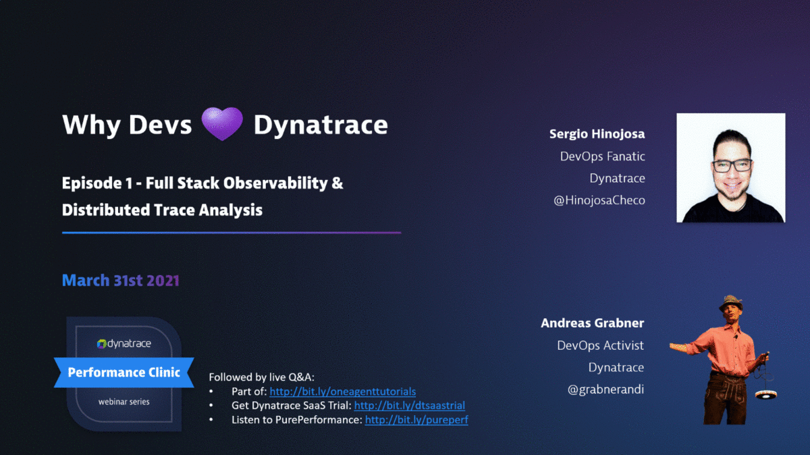
In Episode 1 of this Performance Clinic Series, we will show you hands-on on how you can use Dynatrace in your development & test environments to automate observability and analysis of your applications & services. We will learn how to analyse problematic transactions in complex & hybrid distributed systems. We will dive into easy access of your distributed traces (we call them PurePaths) and how Dynatrace automatically shows the hotspots so that you can easily optimize or fix them.
In Episode 1 we will learn how to:
- Easy start with Dynatrace in Development & Integration environments
- Analyze big & complex environments
- Enhance Developers FeedBack with distributed tracing and code level insights
- Analyze and identify developer transactions (or any kind of transaction)
Dynatrace Secret Sauce
Observability and so much more
Features for Developers in a nutshell
The environment we want to analyze consists of a booking travel portal with a mix of technologies. A mix of Legacy and Classic Stack and also some new stack running on containers. You just need an ubuntu machine to spin it up.
Download install script
Download help script to install Easytravel, Nginx, Docker the OneAgent and other utils
wget https://raw.githubusercontent.com/dynatrace-perfclinics/why-devs-love-dynatrace/main/easytravel/ubuntu-setup-easytravel.sh
Add your Dynatrace credentials
## Set DT_TENANT_URL and API TOKEN
# ---- Define Dynatrace Environment ----
# Sample: https://{your-domain}/e/{your-environment-id} for managed or https://{your-environment-id}.live.dynatrace.com for SaaS
DT_TENANT_URL=
DT_PAAS_TOKEN=
Execute the script
sudo bash -c './ubuntu-setup-easytravel.sh &'
Monaco stands for Monitoring As Code. In Dynatrace we love to automate. With monaco we can automate the configuration of one or multiple environments following a GitOps approach.
We will import the following configurations following a GitOps approach:
Download Monaco
Download the latest release (depending the architecture of your OS) and add the binary to your path.
Check that you can execute the binary
monaco --help
Clone the GitOps configuration
git clone https://github.com/dynatrace-perfclinics/why-devs-love-dynatrace
Navigate to the GitOps directory
cd why-devs-love-dynatrace/monaco/devlove
Add your variables to a helper script set_dt_variables.sh
vi set_dt_variables.sh
# Sample: https://{your-domain}/e/{your-environment-id} for managed or https://{your-environment-id}.live.dynatrace.com for SaaS
DT_TENANT_URL=
# https://www.dynatrace.com/support/help/shortlink/token#create-an-api-token-
# Token in format dt0c01.STXXXX....
DT_API_TOKEN=
# DT_USER (Your login username in the environment, Click on the top right on the people icon and see your id, it can be your email or a username)
DT_USER=
Load the variables in the shell
source set_dt_variables.sh
Execute Monaco
monaco deploy -e environment.yaml --project episode1 -v
Understanding the Performance of any Environment
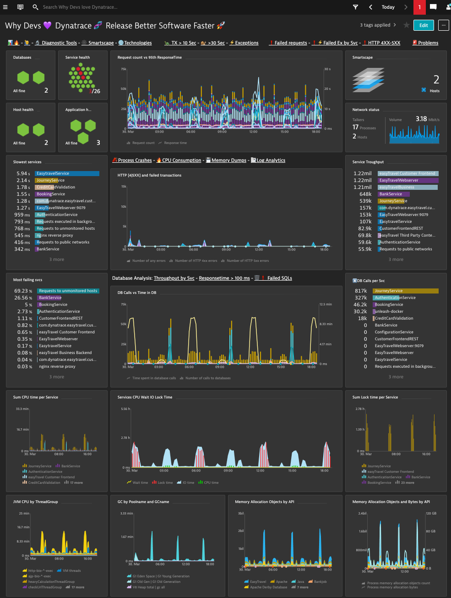
In this Performance Overview Dashboard you can see:
- the amount and health of databases, services, hosts and applications.
- amount of requests vs responsetime 95th percentile
- Network status
- HTTP errors and failed transactions
- Database calls and time spent in database per transaction
- most failing services
- service throughput
- slowest services
- database calls per service
- time transactions spent in database
- service time spent in wait, lock, IO and CPU
- JVM CPU by ThreadGroup
- GC by Poolname
- Memory Allocation Objects by API
For getting a quick understanding on what is deployed on an enviroment, I recommend to start with the following sections:
Technologies
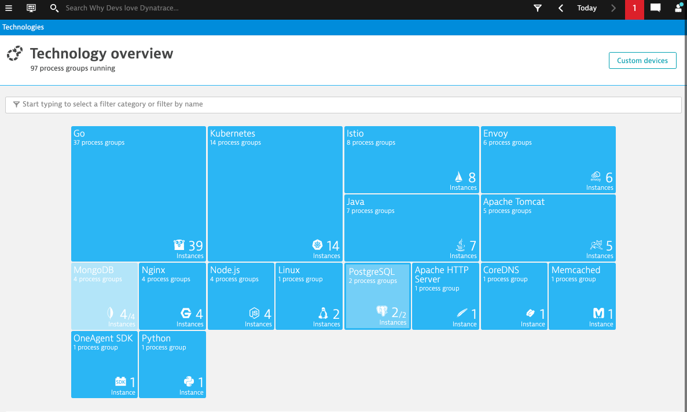
Applications
Get an understanding on the real users accessing the defined applications.
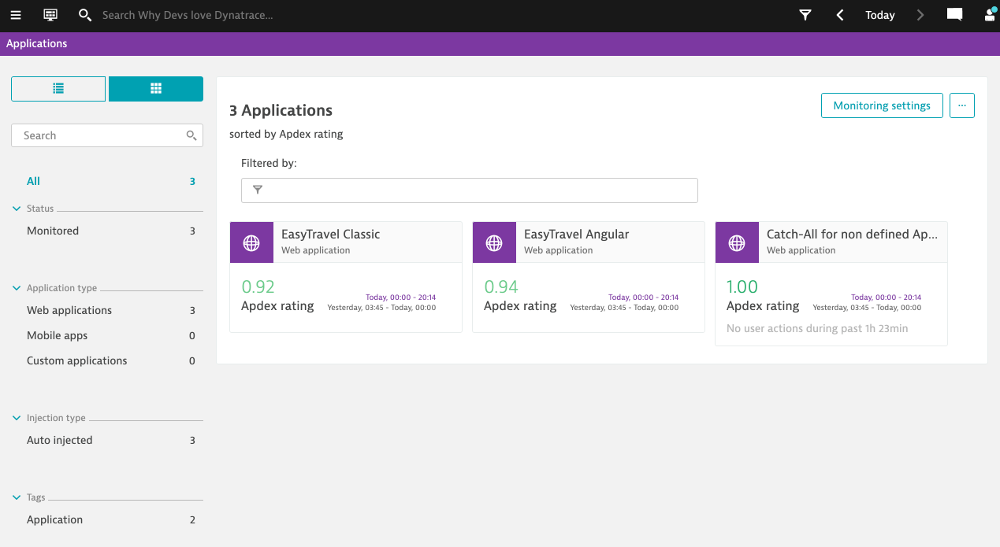
Smartscape

Diagnostic Tools 🔬🩺
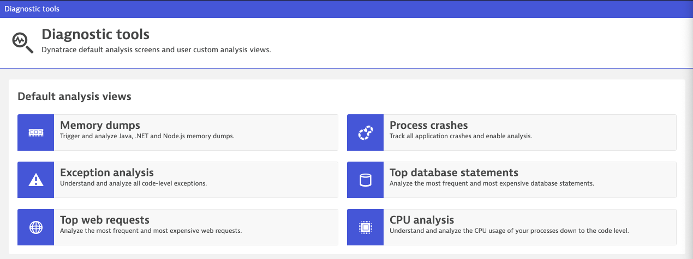

We will search for the following transactions:
🔎 Only failed transactions

🔎 Transactions with more than 10 seconds over the last 6 hours
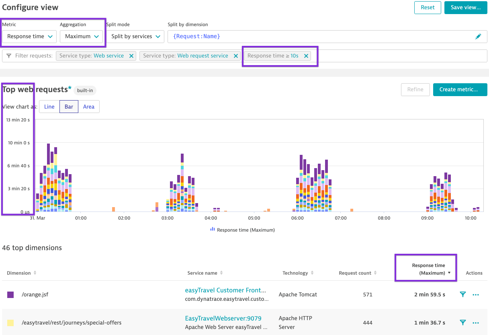
🔎 Transactions calling dynatrace.com
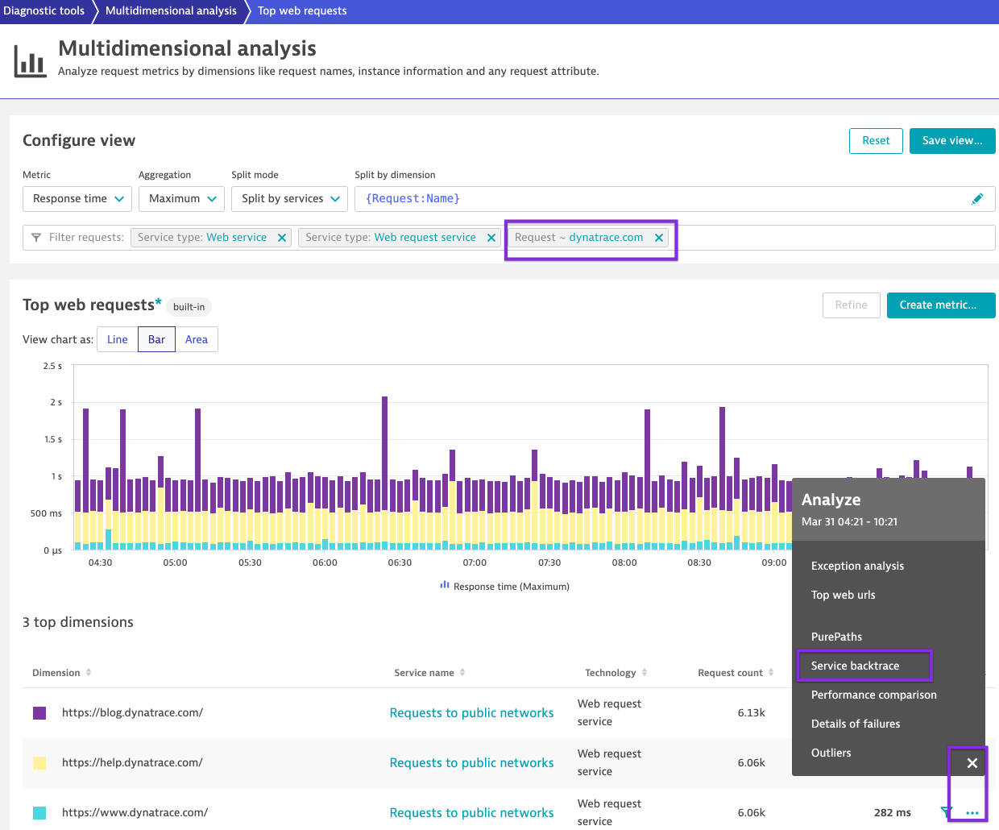
🔎 Transactions that makes more than 100 database calls.

🔎 Transactions with Lock issues
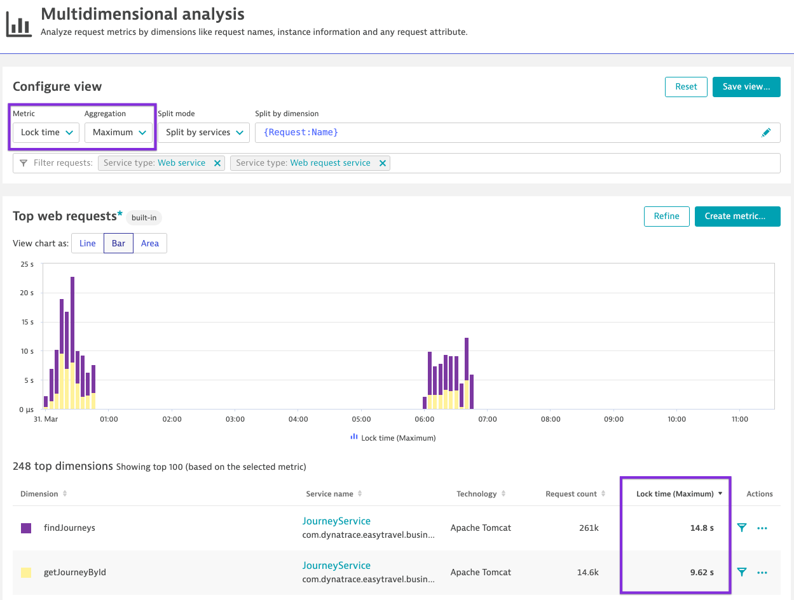

We will search for the following transactions:
🔎 Do we have failing database statements?
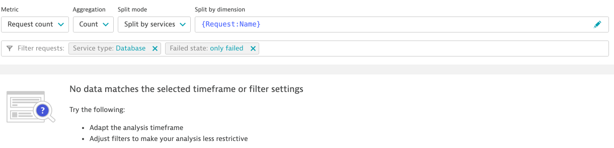
🔎 Which is the slowest database transaction of the day? Continue analysing with the outliers Detect the slowest execution and understand from where was this SQL triggered.

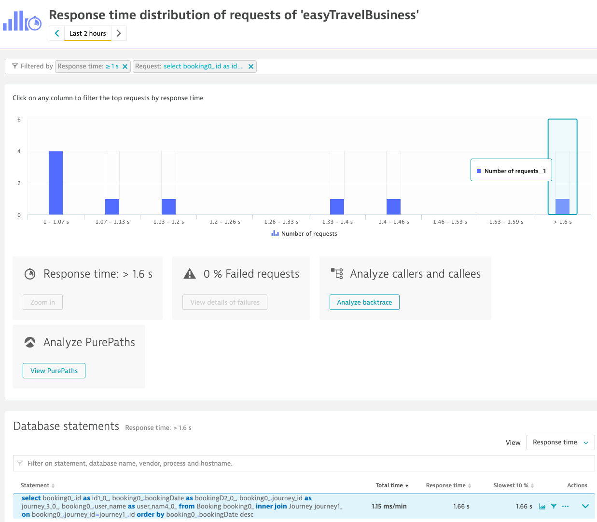

🔎 Which SQL hast the most Fetch count and wich the most Row count? Where is this transaction coming from? Which application and which user action is triggering this SQL?


We will search for the following transactions:
🔎 All Exceptions of the day
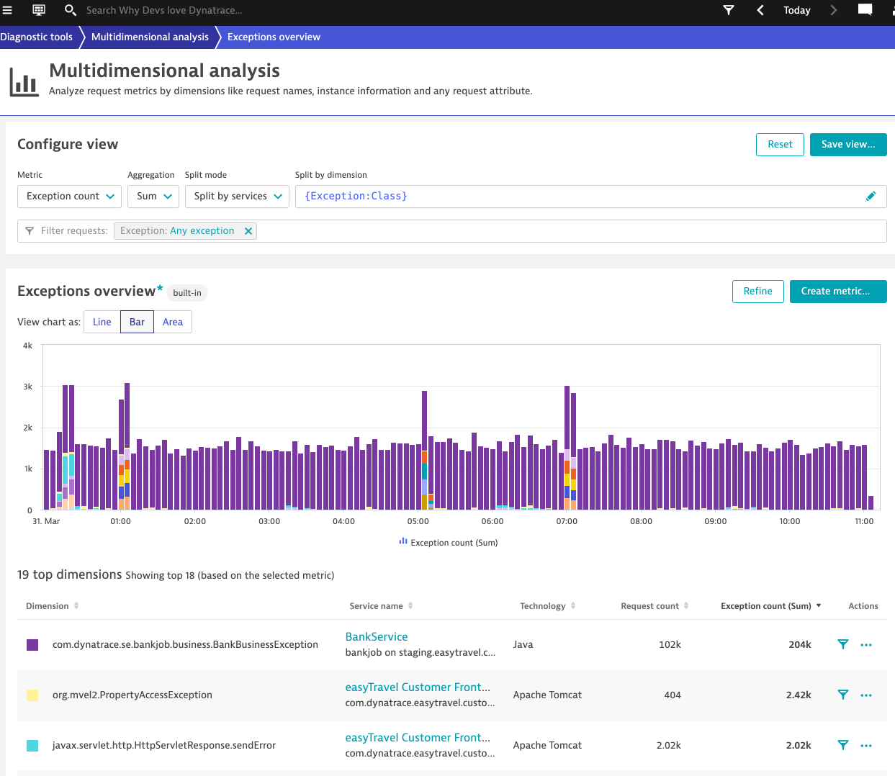
🔎 Failed exceptions
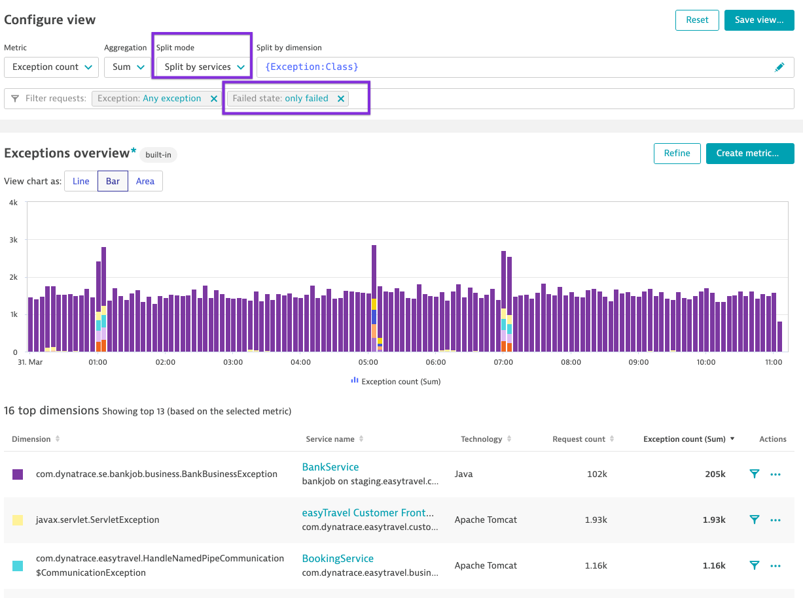
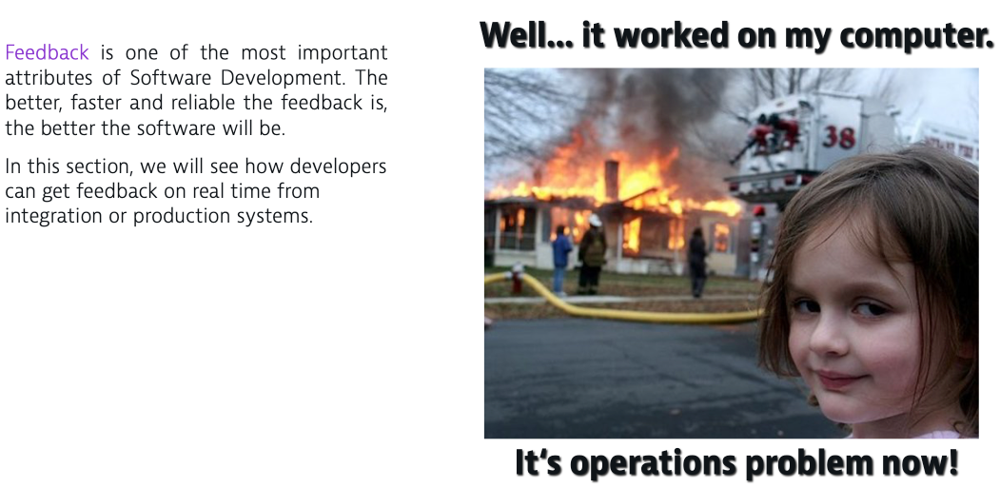
REST Sign-In (Create Account) EasyTravel
We are asked to test the REST Sign-In and Login functionality of Easytravel. To understand the flow of the transaction, response time and architecture. We are only given the REST Endpoint where {{custom.easytravel_ip}} is the IP where easyTravel is deployed.
POST http://{{custom.easytravel_ip}}/easytravel/rest/signin
JSON Body
{
"firstName": "{{custom.developer_name}}",
"lastName": "{{custom.developer_name}} LastName",
"email": "{{custom.developer_name}}",
"password": "{{custom.developer_name}}",
"state": "Bayern",
"city": "Munich",
"street": "Main Street 1",
"door": "",
"phone": "+49123456789"
}
We are going to pass the following attributes into the POST request.
HTTP Headers:
Content-Type: application/json
x-developer: yourname
For this excercise you can use cURL, VisualCode, Postman or any REST tool of your choice. Here is an API Test already preconfigured for you 🚦 API TEST Template for SingIn
- The test consists of basically 2 steps, POST request and an assert.
- Modify the X-Developer Header with your_name_identifier.
- This value will be used as email and password for the creation of the SignIn. (just for keeping things simple)

Create an Account via REST

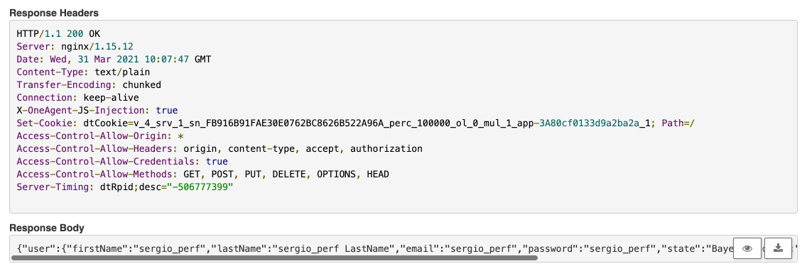


{"error":"The email address you entered is already registered."}
REST Login (Log in to the created account) EasyTravel
Before we analyse the transactions in Dynatrace, let's test that we can create a Login with the created Account.
The endpoint is the following:
POST http://{{custom.easytravel_ip}}/easytravel/rest/login
JSON Body
{
"username": "{{custom.developer_name}}",
"password": "{{custom.developer_name}}"
}
Login via REST
- Open the test 🚦 API TEST Template for Login
- Modify the developer name with your_name to the name where you created the account

- Click on Test
- You should have a succesfull test and the reponse returns the entered data from the Account.
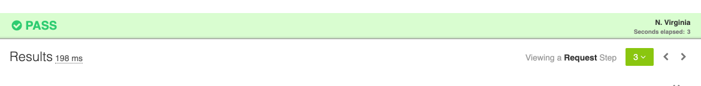
MDA FeedBack Developer
- Go to MDA and search the request by
{RequestAttribute:Developer}

You'll find your request for each transaction twice, but on an Apache Tomcat and on an NGINX. The NGINX (which is running in a docker container) works as a reverse proxa and forwards all headers, hence Tomcat also captures the x-developer header. pretty easy to understand by showing the service flow or backtrace.
- Filter your SignIn requests and show the Service-Flow from the NGINX service.
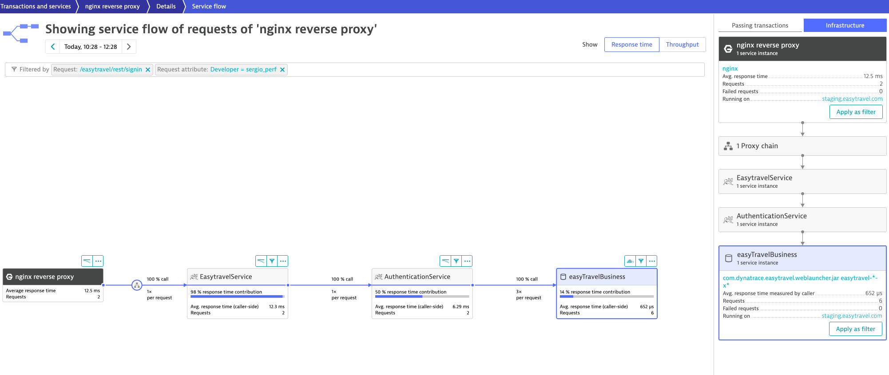
Remove the filter of the sign request. When removing the request type you'll notice the 3 distributed trace of your requests (2x signin + 1x login).
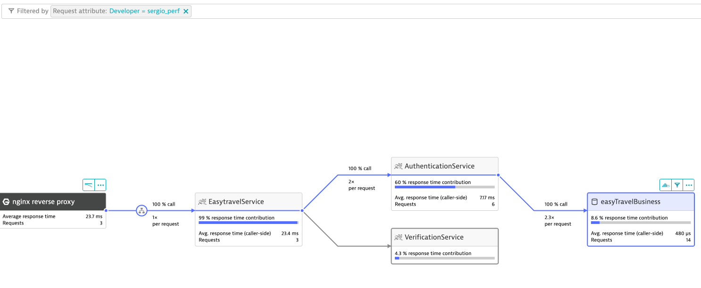
Now let's filter the transaction of the correct Account creation. Add a response code:200 and request:sign

Now on the NGINX Service we click Analyze and go to the Response time hotspots. I like to think that I submerge into the service and navigate inside the service.

Inside the Response Time hotspots Dynatrace shows us the average time of the selected transactions on the NGINX service. The distribution of its transactions (we have only one here) and the top findings.

We see that the most of the time is spent on interaction with other services which is the Method signUser on the EasyTravel Service. We click on the filter to navigate forward.

Notice how we jumped into the next service. Imagine that you are navigating within the distributed transactions and now you find yourself on the next service.
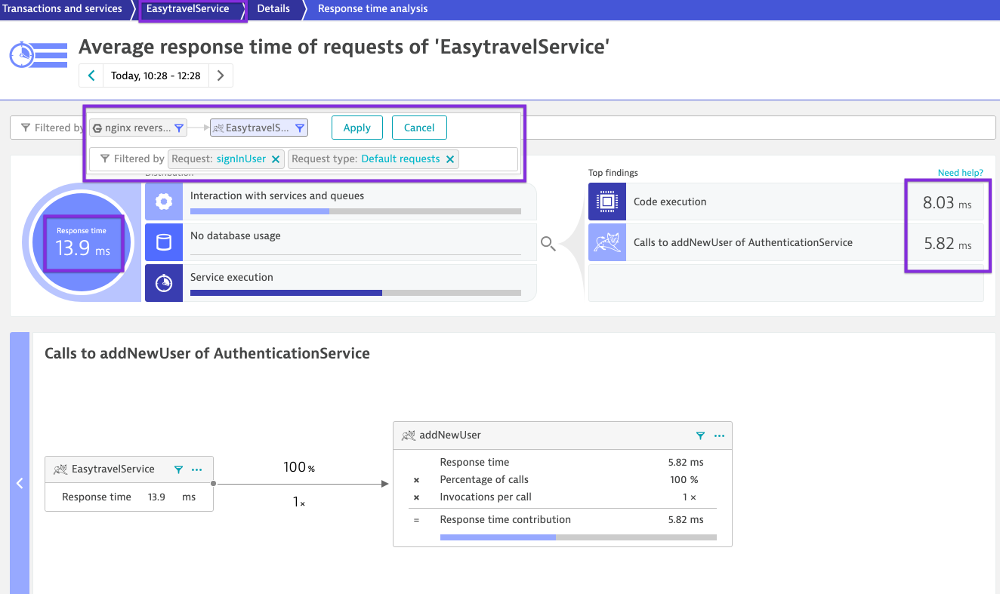
Notice how we start adding a chain of filters into the analysis and we navigate through the services. Now the time changed to 13.9 ms because we are in the EasyTravelService. From those 13.9ms, 8 milliseconds are spent on code execution whitin this service (java code since its a tomcat) and 5.82 ms in calls to addNewUserin the AuthenticationService. We click on the filter on the addNewUserin the AuthenticationService to jump to the next service.
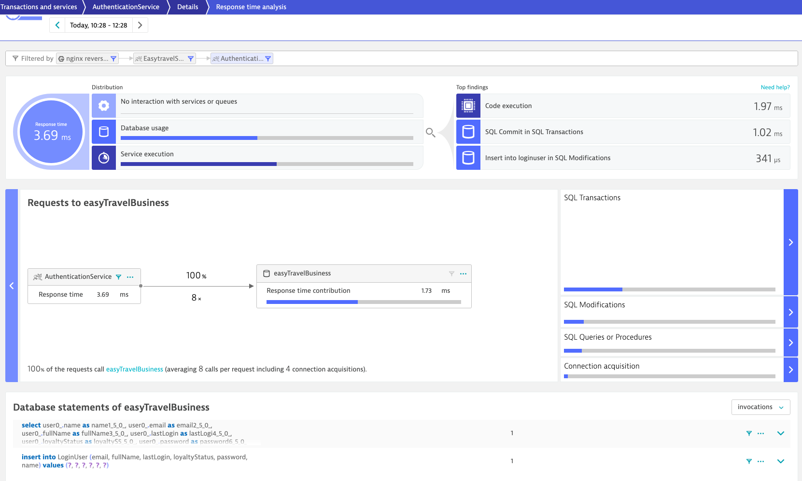
Now we find ourselves in the AuthenticationService. The timings adapt and we see the information for this transaction and this service. By clicking to the Database we see there were 8 request = 4 Connection Aquisitions + 2 SQL Statements (1 x Select + 1 x Insert ) + its corresponding 2 Commits.

Now let's show the Purepath so we understand how we navigated. Scrolldown and click on Backtrace and on the NGINX node, click on Analyze > Purepaths.
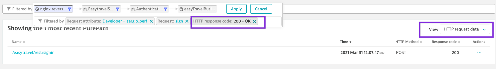
Now it's showing us the purepath from the nginx as start (distributed trace with all it's spans and code insights). On the dropdown on the right, show the HTTP request data. Now we remove the filter of the response code 200 on the NGINX node and click apply. What happens?

It's also showing us the transaction that failed.
If you compare them you'll notice that the one that succeded (besides having the response code 200 which is obvious) has an insert statement.
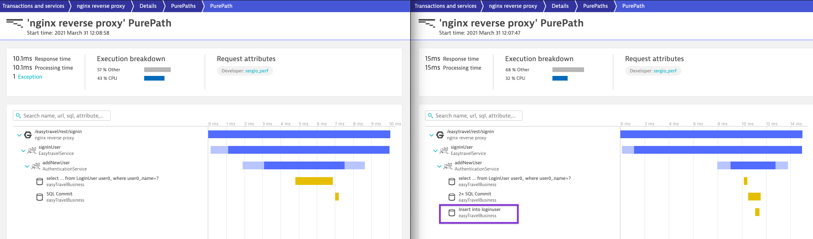
This is due the fact that the previous select statement (select user...) does not find the account hence is able to insert a new account in the database.

The subsequent account creation returns a row hence the double account can't be created.
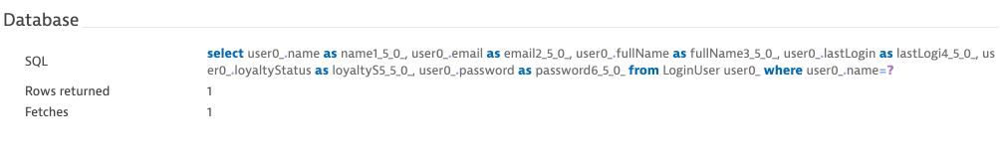
The rows returned can also be seen for both transactions by displaying the purepaths from the database node.
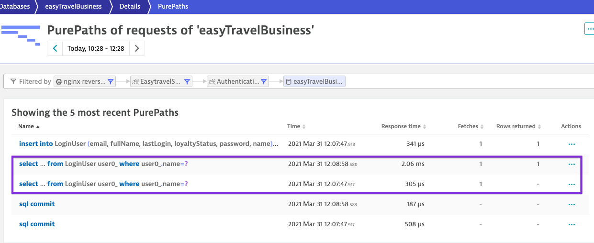
Service-flow Login
- Now show the flow of your Login.
- Notice again the intertier-calls how they add up, the contribution of each service and the infrastructure where it's running.
ResponseTime Hotspots Login
Open the ResponseTime Hotspots from the ReverseProxy. Notice the contribution from Tomcat the Calls to AuthenticationService (4x) and VerificationService (1x)
Notice the contribution by Method within the AuthenticationService and how it can tell us which method is taking the most time within a single transaction (even though we are moving in 2 digit ms time)
We are happy to hear your thoughts & suggestions!